The main Techiques I own here are listed as Software and Experimental skills:
> Software: (1) Programming lanuages: Java, Python, Matlab, Labivew,VB,C++;
(2) Data analysis:SAS (Statistical Analysis System, R language, Gpower, SPSS, Excel);
(3)Scientific Calucation and imaging process:Mathematica, Matlab;
(4) Biochemical Analysis:Accellyrys, DNA 2.0, Gpower;
(5) Others: Endnote, Adobe Flash/Photoshop; HTML, ProE, etc.
> Experimental Skills:
(1) Microscope(TEM, AFM, SEM, Raman, Confocal Raman, UV-VIs Spectroscopy);
(2) Assays(cell & protein) and cell culture;
(3) Others: Drug delivery, eletrospinning, animal surgery training.
NOTE: If you use IE to view this page, please allow ActiveX.
-
Matlab
TinySlideshow/photos/A.pngThis is a platform for Esophageal cancer CT diagnose in hospitals, which is developed by myself. For details, please see Pro. Feng’s lab in Lab work item.I can use matlab to do statistical analysis, data analysis, image processing, signal processing, mathematical modeling, etc.
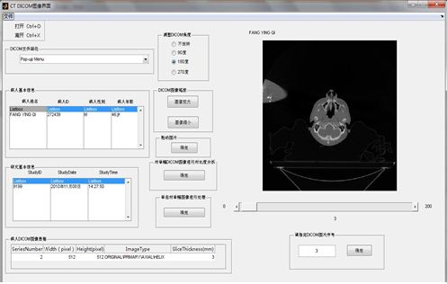 -
Java
TinySlideshow/photos/B.pngThis is a simulation platform for the relaxivity mechanism of contrast agents in MRI for cancer diagnose, which is developed by myself. For details, please see Pro. Balaji’s lab in Lab work item.I can use java to do interface design, theoretical verification, simulation and fitting, mathematical modeling, dada analysis, statistical analysis, etc.
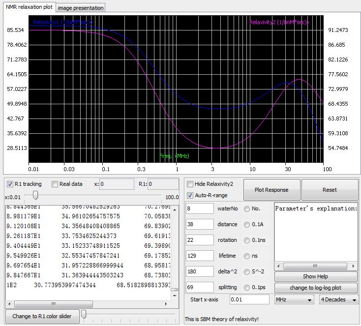 -
Python
TinySlideshow/photos/C.pngThis is a fitting platform for the relaxivity mechanism of contrast agents in MRI for cancer diagnose, which is developed by myself. For details, please see Pro. Balaji’s lab in Lab work item.I can use python to realize the similar tasks as matlab does from another view, including statistical analysis, data analysis, image processing, signal processing, mathematical modeling, etc.
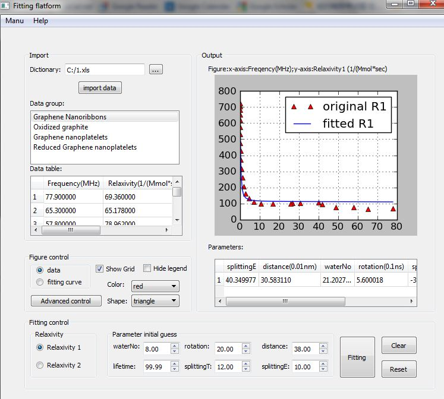 -
SAS (Statistical Analaysis System)
TinySlideshow/photos/new/SASnew1.jpgThis is one screenshot I made for Data Analysis project. I can use SAS to do deep data processing.
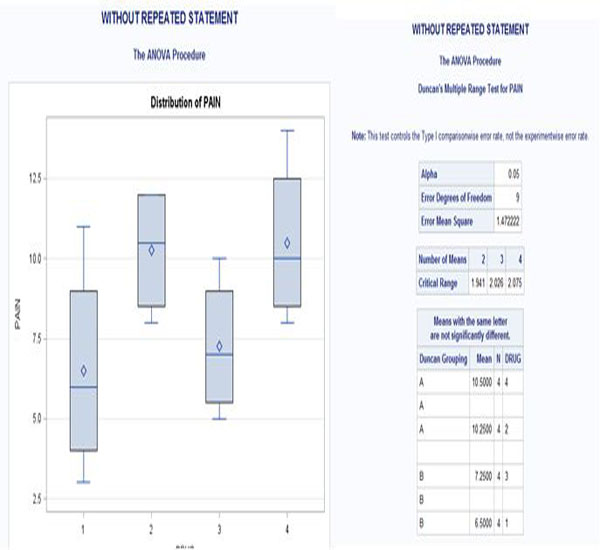 -
Gpower 3.0
TinySlideshow/photos/new/gpower1.jpgThis is one screenshot I made for Statistical Analysis project. I can use Gpower to do many analysis including significant analysis.
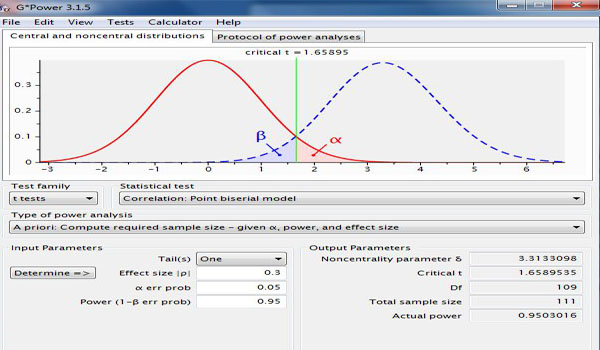 -
SPSS (Statistical Package for Social Sciences software)
TinySlideshow/photos/D.pngThis is the work process using SPSS when I was studying the mechanism of CT diagnose for Esophageal cancer. For details, please see Pro. Feng’s lab in Lab work item.I can use it to do almost all the statistical analysis with large data capicity.
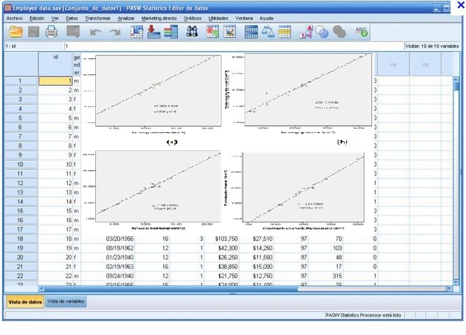 -
R language
TinySlideshow/photos/new/R1.jpgThis is one screenshot I made for Statistical Analysis project. I can use R language to analysis the morphological changes of Graphene oxide.
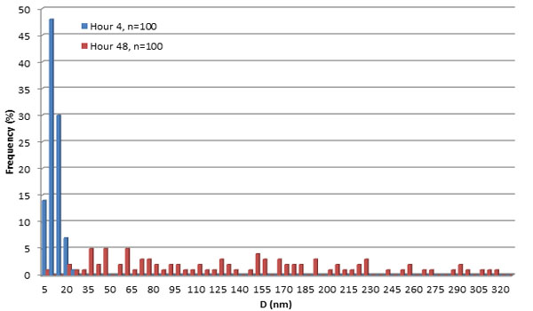 -
Accelyrys
TinySlideshow/photos/new/Ac1.jpgThis is one screenshot I made for graphene degradation project. I can use Accelyrys to analysis the change of graphene structure change influenced by Lignin peroxidase.
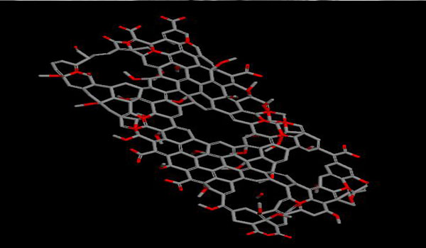 -
AutoCAD (mechanical software)
TinySlideshow/photos/E.pngThis is the picture of one of the patents I successfully applied. The work is guided by Pro. Wang. For details, please see Pro. Wang’s lab in Lab work item.I can use autoCAD to do the engineering designs mechanically.
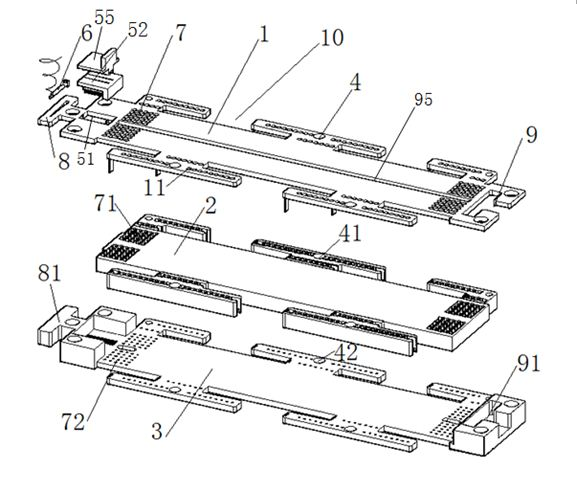 -
Mathematica
TinySlideshow/photos/new/math1.jpgThis is one screenshot I made for Hydorgen peroxide oxidation project. I can use Mathematica to do scientific calculations.
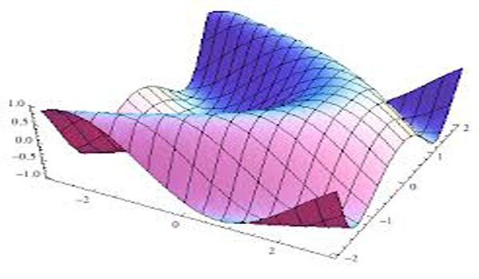 -
Adobe Flash(use Actionscipt 3.0 language)
TinySlideshow/photos/F.pngThis is one screenshot I made for contrast agents in MRI explanation. For details, please see Pro. Balaji’s lab in Lab work item.
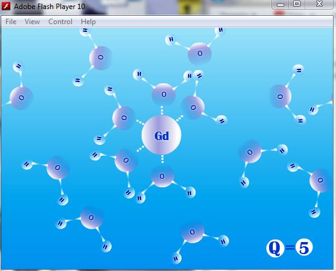 -
ProE (mechanical software)
TinySlideshow/photos/G.pngThis is one screenshot I made for optogenetic project. For details, please see Pro. Entcheva’s lab in Lab work item.I can use autoCAD to do the engineering designs mechanically.
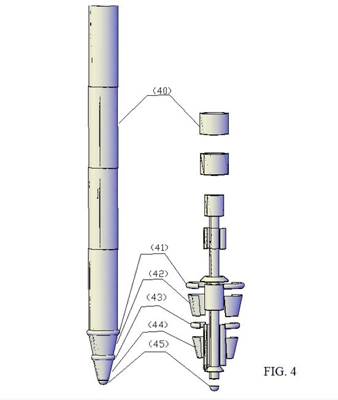 -
Adobe Photoshop
TinySlideshow/photos/H.pngThis is one poster I made for the mechanism of CT diagnose for Esophageal cancer. For details, please see Pro. Feng’s lab in Lab work item.
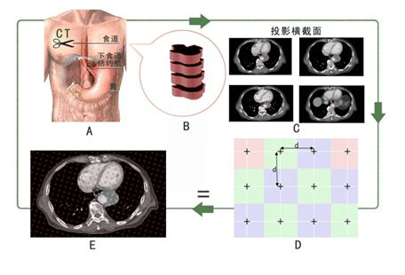 -
HTML language and Adobe Dreamweaver
TinySlideshow/photos/I.pngThis is one screenshot of the lab website I made for Pro. Balaji. For details, please see Pro. Balaji’s lab in Lab work item.
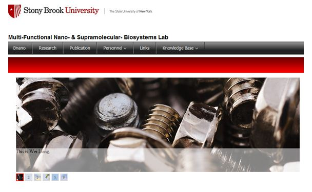 -
Labview(use graphic language)
TinySlideshow/photos/J.pngThis is one screenshot during my Teaching Assistant course with Pro. Lin in Stonybrook U. This platform is used for the simulation of Bode frequency plot.I can use labview to do the engineering virtual simulation.
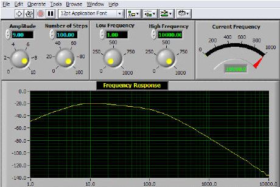 -
Protel (electrical software)
TinySlideshow/photos/L.pngThis is the Block diagram for Design of Optoelectronic Pulse Wave Detecting System in Medical Electronics in Pro. Wang’s lab. For details, please see Pro. Wang’s lab in Lab work item.I can use Protel to design the electric circuit.
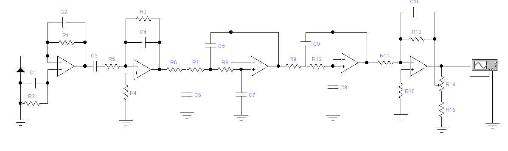 -
DNA 2.0(for Gene Synthesis and Design)
TinySlideshow/photos/L1.pngThis is the virus design for optogenetics in Pro. Entcheva’s lab. For details, please see Pro. Entcheva’s lab in Lab work item.

-
TEM (transmission electronic microscope)
TinySlideshow/photos/new/TEM1.jpgThis is one screenshot I made for enzymatic degradation project. I can use TEM to do micro-imaging and analysis.
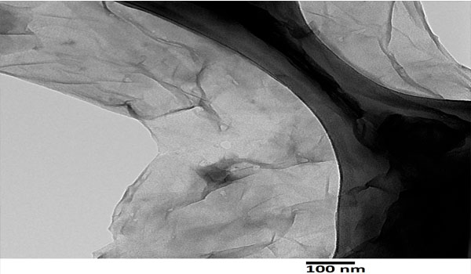 -
AFM (Atomic force microscopy)
TinySlideshow/photos/new/AFM1.jpgThis is one screenshot I made for Hydrogen peroxide oxidation project. I can use AFM to analysis morphological change of macromoleculars.
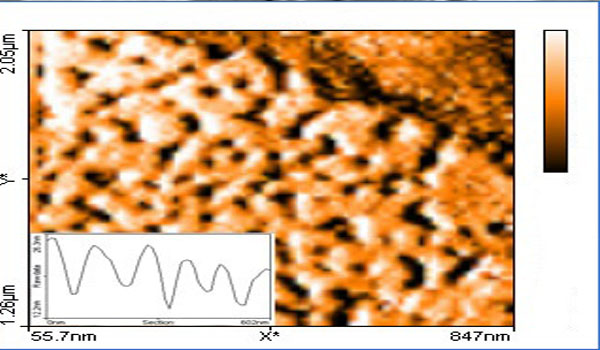 -
SEM (scanning electron microscope)
TinySlideshow/photos/new/SEM1.jpgThis is one screenshot I made for SEM training project. I can use TEM to do many further morphological change analysis.
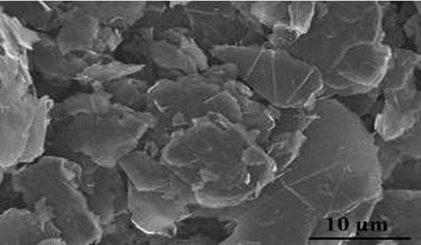 -
Raman Spectroscopy
TinySlideshow/photos/new/raman1.jpgThis is one screenshot I made for Enzymatic degradation project. I used raman to do emission intensity change analysis.
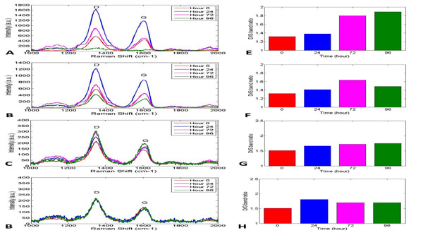 -
SEM (scanning electron microscope)
TinySlideshow/photos/new/SEM1.jpgThis is one screenshot I made for SEM training project. I can use TEM to do many further morphological change analysis.
-
UV-vis spectroscopy
TinySlideshow/photos/new/UV1.jpgThis is one screenshot I made for enzymatic degradation project. I can use UV-vis Spectroscopy to do many enzyme activity assays.
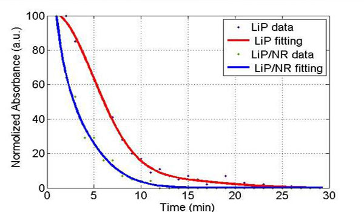 -
cell culture
TinySlideshow/photos/new/cell1.jpgThis is one screenshot I made for Optogenetics project. I prepared cardiac stem cells for Optical stimulation experiments.
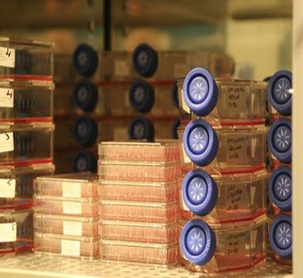 -
Drug delivery
TinySlideshow/photos/new/drug1.jpgThis is one screenshot I made for enzymatic degradation project. I can operate drug loading, toxicity test, etc.
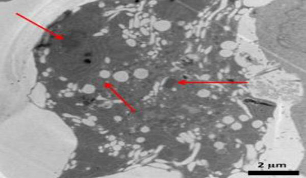 -
Electrospinning
TinySlideshow/photos/new/electro1.jpgThis is one screenshot I made for enzymatic degradation project. I will use this technique to improve enzyme degradation efficiency.
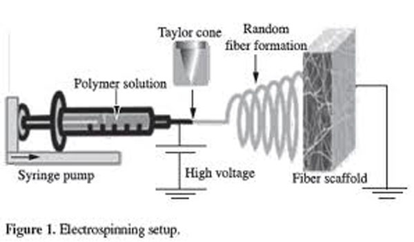 -
Animal Surgery Training
TinySlideshow/photos/new/animal1.jpgThis is one screenshot I made for enzymatic degradation project. I took the training to prepare for future in vivo degradation and cancer studies.
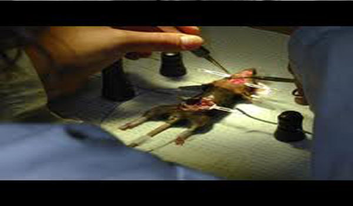 -
Others(C++, office, Visual Basic,Endnote, etc. )
TinySlideshow/photos/M.png